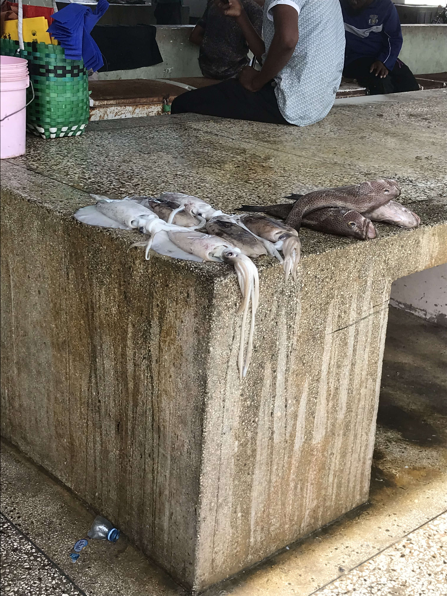
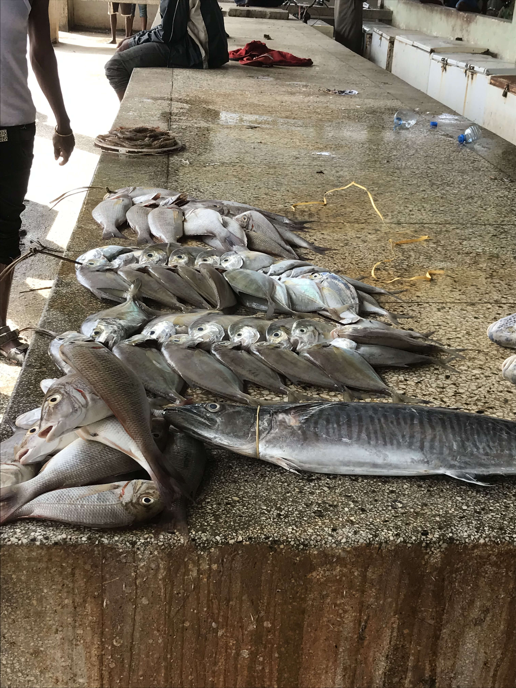
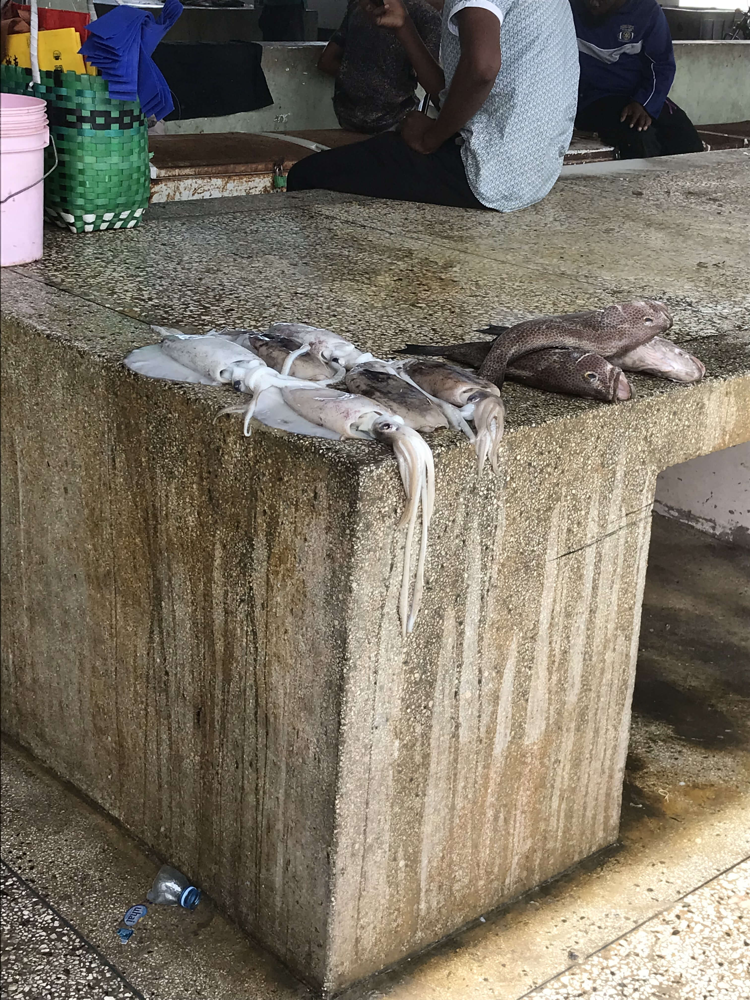
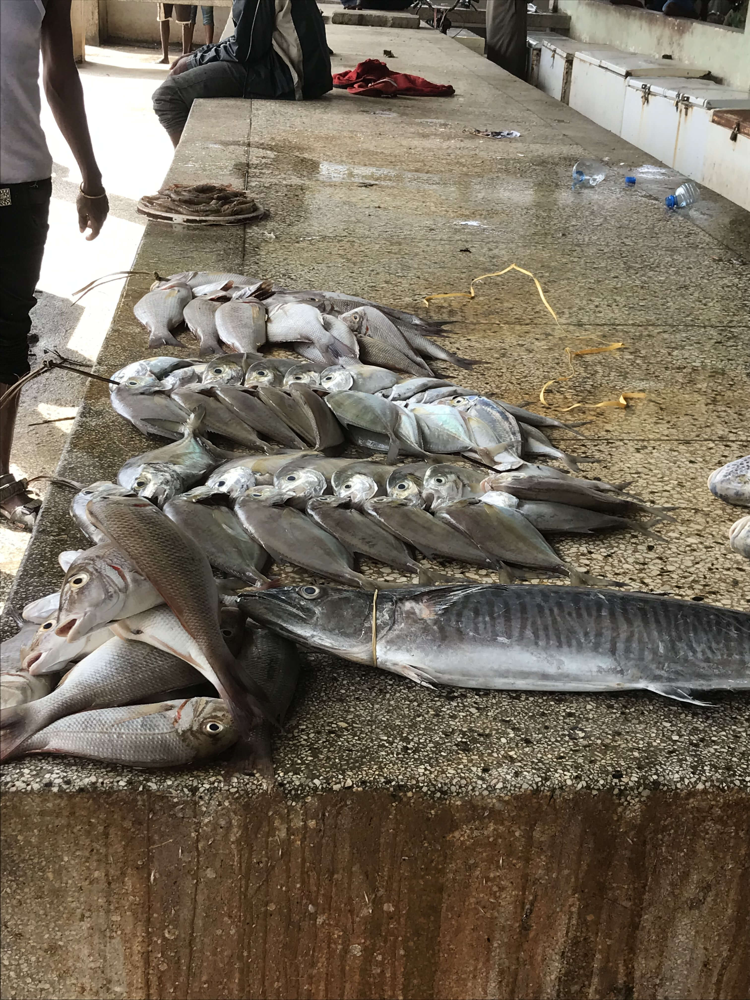

Introduction
I didn't think twice about going to Africa.
I come from a climate that is the complete opposite of a typical climate in Africa.
Not humid, nor warm, but cold and dry.
I come from the cold north; I was raised in Sweden.
Meeting my girlfriend
I recently moved to Austria on the southern mountainside of Salzburg, where my mother lives. She lives in a small village with much tourism all year round. I very quickly got a job at a newly opened restaurant looking for service staff.

With the village located at almost 1 km (0,6 mi) above sea level, the temperature was not much different from Sweden. So, I was very much used to it, unlike my significant other: a woman from Tanzania whom I met at a voluntary theater group in Salzburg. She had traveled to Austria to do her Masters in Theater, and that is how we met; fate has brought us together. After almost half a year, in April of 2024, she took me to Africa.
Arrival in Tanzania
My girlfriend and I had traveled to meet my relatives in Germany prior to this trip. We had felt both the excitement and tiredness of traveling together before, but this journey was very different. It was both more exhausting yet also more empowering, giving both of us a lot of strength to endure fatigue. We felt unconditionally stronger, which is to say the least, an amazing feeling.

Getting on the plane from Istanbul to Tanzania was special. I didn't expect such a large variety of people entering that plane to visit Africa. I saw Americans interacting with each other and speaking to foreigners in a kind manner, giving me a feeling of international importance. As someone who has been to the States before, it was cool to see. So warm and eager for an adventure, just like me.
Prior to this trip, I had never been to Africa before. Funny enough, I hadn't even applied for a visa before traveling to Tanzania. Why? Because I had been told beforehand by relatives of my girlfriend that there is "visa on arrival," which costs 50 US dollars and is easily attainable. So upon arrival, this was now the real test, would I be stuck for hours on end, or make my way through without any hassle? I made it to customs in a large single line of people; my girlfriend, a Tanzanian, took the shortcut. I greeted the border patrol with "Shikamoo," a polite way of greeting an older person, literally translated to "I touch your feet." They replied with "Marahaba," and I responded with "Nzuri," meaning "I'm good." He asked me just one more question, "Why are you here?" My brief answer, that I was traveling with my girlfriend, sufficed. I paid, and I was through. This was a very pleasant experience, which lifted my spirits high. I had been afraid that I could be stuck, but no, Tanzania welcomed me with open arms.
Cultural Differences and Similarities
Based on my experience, I believe there is generally less racism in Tanzania compared to Europe, though opinions may vary. During my visit to Tanzania (I'm in my mid-twenties), I was treated with unexpected respect despite not having any significant achievements which may result in me earning it. This respectful treatment seemed to be based solely on my appearance as a young Western visitor, accompanied by my girlfriend. It's important to note that this is just my personal observation and may not reflect everyone's experience.
I was not your average tourist at all; I was invited into a family for a meet and greet party. I met the parents of my loved one, her grandmother, her little brother, many of her cousins, aunties, uncles, and some family friends. To my surprise, I was not the only one speaking German.
In Tanzania, the sense of community is strong, and people are very welcoming to foreigners. However, the love for family, good food, and the celebration of traditions is something both cultures share deeply.

A Town with a Grim History
Bagamoyo is where I spent most of my time in Tanzania and where I truly experienced Africa. Despite the town's poverty, the people are incredibly friendly to foreigners.
"Bwaga," meaning 'to dump,' and "moyo," meaning 'heart,' was the place in history where slaves got to rest after months of walking. Bagamoyo can be translated into 'lay down' or 'take a load off your heart'.
I was truly fascinated by the town and so thankful and surprised that I, by pure accident or call it fate, landed in this town I had no idea existed. In this blog, you can see some pictures I took: The featured picture in the introduction to this blog is the old Arab tea house built during the 18th century in Bagamoyo. During the 18th century, Arabs made their living right here. From the 1880s up until the end of the First World War, mainland Tanzania was a German colony, and Bagamoyo served as the first capital of German East Africa until 1891, when Dar es Salaam became the new capital. After the First World War, the territory became a British mandate under the League of Nations.
The featured picture for this chapter is the old German Boma assisted by metal poles in a way to keep it from falling apart.
A Ride through the Town on a "Boda Boda"
I got to experience local Bagamoyo during my stay. In Tanzania, a "boda boda" (a motorcycle) is a common means of transportation, and you can call a driver to take you anywhere for an affordable price. A family friend, who I understood to be a "boda boda" taxi driver, took us from place to place, and it was a lot of fun.
Did you notice the water tower near the end of the video?
My Impressions of a Tanzanian Fish Market

The fish market is a significant place. The variety of fish was large, and the quality was good. I went there with my girlfriend and her mother to buy fish. The price for fish must be bargained, and when her mother had bought the fish, she joked with us but with a serious tone, saying that they charged her more than usual because we were following her around like ducks and since I am white, they thought we had more money.
Quality Fish from Bagamoyo
 




My Impressions of the City
Dar Es Salaam, approximately one hour south of Bagamoyo, is a stark contrast to the quiet town of Bagamoyo. As the economic capital of Tanzania, it is a hub of activity, with markets, businesses, and many high-rise buildings, making it hard to find a house among the "forest of buildings."
When my girlfriend and I visited Dar es Salaam, we mostly skimmed through the city by car with a driver. As we were driving, we occasionally ended up in traffic jams, as is common in any big city. It was amusing to me that people would come up to our car (since the windows were often down due to the humidity and our A/C didn't work, unsurprisingly) and try to sell us various items. They offered bags of cashews and other nuts, handmade ribbons and bracelets, and whatnot. The prices were cheap, with everything being around 1,000 to 10,000 Tanzanian Shillings per item.
The Economy of Tanzania
| Currency | Equivalent of 10,000 TZS |
|---|---|
| USD | $3.77 |
| EUR | 3.51€ |
| GBP | £2.97 |
At a local butcher in Bagamoyo, we could buy 1 kilo (2.2 lb) of meat for 8,000 TZS. When I was in Tanzania, I felt like a millionaire!
Why Visit Tanzania?
Based on my experience, the people of Tanzania seem to have an enthusiasm for welcoming visitors. Their attitude towards tourists may be different from what is seen in some Western countries. It's important to recognize that sometimes when Africans travel to Europe, they may encounter cultural challenges. However, my experience in Tanzania was delightful and completely different.
The locals in Tanzania appear ready to assist visitors with generosity, sometimes assuming that foreigners have greater financial means. This is not ill-intentioned, but rather stems from existing perceptions. Tanzania is a beautiful country rich in culture and natural resources, and it is my hope that this welcoming attitude will continue.
It's true that poverty remains a significant challenge in Tanzania, as shown by various statistics. However, development efforts and responsible tourism can contribute to improving the lives of locals.
Tanzania has many natural and cultural attractions that can appeal to any visitor. I would recommend people who are interested in learning and broadening their perspectives to visit this country. It's a unique opportunity to immerse oneself in a different culture, see beautiful landscapes, and perhaps gain a new outlook on life.
For those seeking a closer connection with the natural world or wanting to learn more about different cultures, Tanzania can be an excellent place to start that journey. I believe that the experience of visiting Tanzania can be eye-opening and potentially life-changing.
This translation captures the nuanced and balanced perspective of the original Swahili text, highlighting the positive aspects of visiting Tanzania while also acknowledging some of the challenges and cultural differences visitors might encounter.